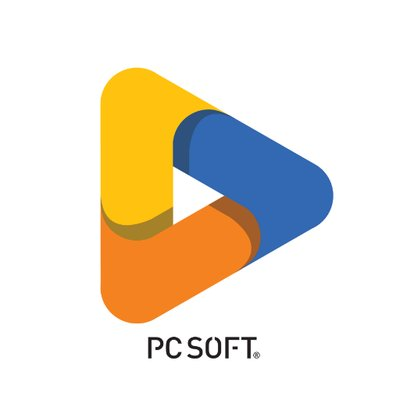

Présentation
Durant mon alternance chez RFIDEES, j’ai mené deux projets principaux aux enjeux techniques forts :
- Développement d'une application de test CEM : application Windev pour piloter un analyseur de signaux, intégrant les normes, les limites, le traitement des mesures, et la communication avec l’instrument via commandes SCPI.
- Reconception électronique de l’automate RAL STAINER : identification des composants de l’ancienne carte, conception d’une nouvelle architecture matérielle autour d’un microcontrôleur STM32, et configuration des bus SPI, I2C, UART.
Compétences développées
- Développement bas niveau sur STM32H753ZI (bus SPI, UART, I2C)
- Conception d’IHM interactive (Windev) pour l’analyse CEM
- Utilisation d’oscilloscopes et Wireshark pour l’analyse des trames
- Lecture et compréhension de schémas électroniques
- Travail en binôme sur la conception hardware et firmware
Perspectives
Cette alternance m’a permis d’aborder des domaines techniques variés, de renforcer mes compétences en développement embarqué, et de mieux comprendre les enjeux du monde industriel. Je poursuis désormais mon parcours en cycle ingénieur en alternance, avec l’ambition de participer à de nouveaux projets innovants.
Membres
- 1 BUT3 parcours A
Compétences techniques
C
Windev
STM32Cube
Difficultés et réussites
La difficulté résidait dans la prise en main et la compréhension de l'analyseur de signaux et la compréhension des notions d'électronique, car je partais de zéro sans connaître la machine ni le protocole de communication utilisé. mais aussi car le développement embarqué implique des notions d'électronique. J'ai réussi à mener à bien les recherches nécessaires pour découvrir progressivement les normes de CEM et comprendre les bus de communications du projet.
-
semptembre 2024 - février 2025
Application pour la CEM
- Lecture de la documentation
- Analyse des fonctionnalités
- Recherche sur la communication
- Création de l'application pour gérer l'analyseur de signaux
-
février 2024 - avril 2024
Application pour tester des lecteurs UHF
- Prise en main du fonctionnement du lecteur
- Mise en place d'une procédure de test
- Création de l'application pour faire les tests
- Exécution des tests et corrections des lecteurs
- Déterminer un lecteur de référence avec ça configuration
-
février 2024 - avril 2024
Reconception électronique
- Démontage de la machine
- Analyse de l'existant
- Reconception de l'électronique
- Prise en main du devkit
- Compréhension des bus de communications
- Développement du logiciel embarqué pour manipuler la mécanique de la machine